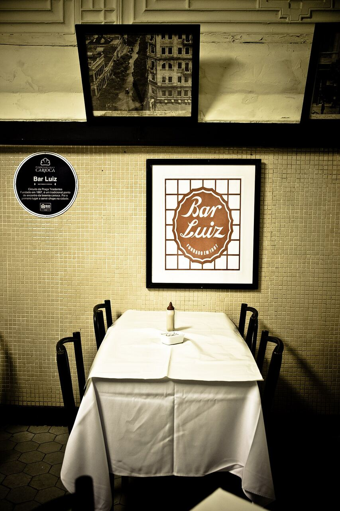
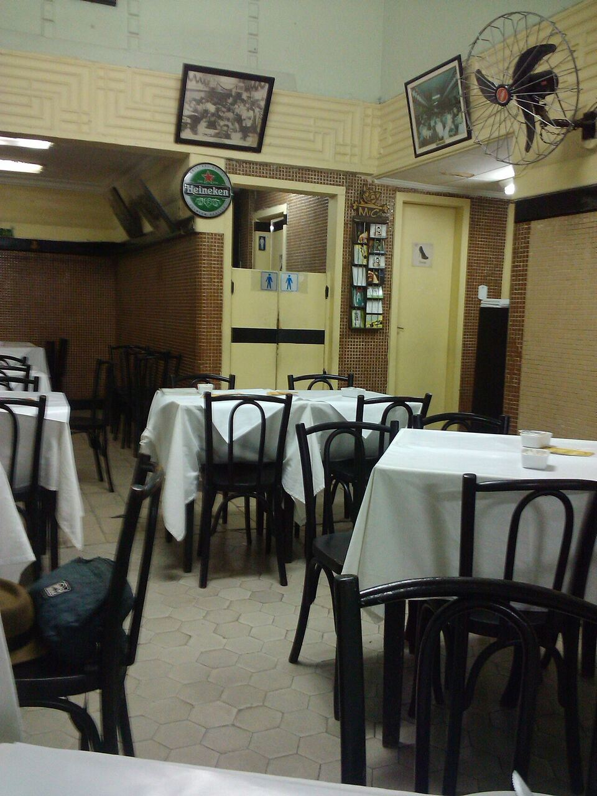
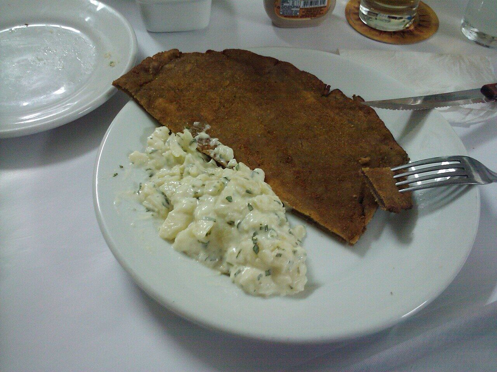

Bar Luiz
Centro
Um dos bares mais antigos da cidade, com chope e salsichão.
Nosso comentário
Na Rua da Carioca desde o século XIX, o Bar Luiz tem salão antigo, chope cremoso e pratos de inspiração alemã. É perfeito para um happy hour depois de um dia de passeio pelo Centro.
Dicas
- Ideal no fim da tarde, depois do roteiro do Centro.
- Confiram o horário: costuma fechar cedo.
Combina com
- Centro histórico de dia
- Praça XV, Paço Imperial e Arco do Teles de dia
Fotos do lugar


